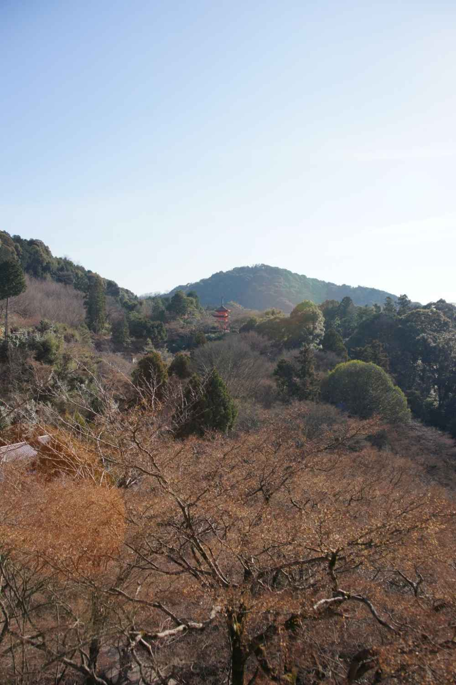

| The Time of Civilization January 7, 2004 | |
| kenji, akutagawa | |
| giovanni godokaisha (2014) | |
The author is of visiting the Kiyomizu Temple three times already this year alone.
Blog readers of the author, should you know about the reason.
2014/1/7 was fine weather. On this day, the author visited the Kiyomizu Temple,
The monument that is in the way back, It was flooded in particular.
It will because it, it has seen the inscription at the back of the monument for the first time.
The author told us he wants delivered to the world as soon as possible and to translate this inscription.
It believes we also would like to look around the world, as many people as possible.
The following is its inscription.
Is referred to as a HITAKMI countries Tohoku, Kitakami basin until around the end of the 8th century, is located in the power outside the province of Yamato government,
It had formed the life and culture of its own.
The disdain called EMISHI the people of Tohoku they do not want to subsumption, the government mobilized the army march east of millions over several orders for its administration. Leader of Isawa (Mizusawa City region Iwate Prefecture), TAMONOKIMI ATERUI over to Union neighboring tribes, It was blocked robust this invasion. It was a lot of damage to the army march east and struggling to valiant in battle of SUBUSE of 789 years among them.
801 years, Sakanoueno Tamuramaro laid the Isawa Castle entered the Isawa allegiance by the measures went to war led the officers and men of 40 000. It concerned the township people that battered the heavy battles over a dozen years, Aterui surrendered to Tamura Maro to tow the more than five hundred people brethren. Returned to Kyoto involves the second in command Iwakunokimimore Aterui, and spares personable and valor of two great men of EMISHI, Tamura Maro was mercy petition to the government in order to elevated to the Tohoku management. However, Aterui and More were executed in Kawauchi country August 13 802 years by the opposite of aristocrats. Upon anniversary in 1200 has passed the city is made in Kyoto,
The honor of the monument ATERUI and MORE had died in strange land in vain earnest desire of Tamura Maro,
By courtesy of exceptional of Kiyomizu Temple,
To be erected in the temple precincts of Tamura Maro foundation.
May their soul rest in peace and May the honor of two great men are forever.
Auspicious Date November 1994
Kansai Tane same town meeting,
Meeting to honor Aterui,
Kansai association of people from the Iwate prefecture
Kyoto association of people from the Iwate prefecture



Is referred to as a HITAKMI countries Tohoku, Kitakami basin until around the end of the 8th century, is located in the power outside the province of Yamato government,
It had formed the life and culture of its own.
The disdain called EMISHI the people of Tohoku they do not want to subsumption, the government mobilized the army march east of millions over several orders for its administration. Leader of Isawa (Mizusawa City region Iwate Prefecture), TAMONOKIMI ATERUI over to Union neighboring tribes, It was blocked robust this invasion. It was a lot of damage to the army march east and struggling to valiant in battle of SUBUSE of 789 years among them.
801 years, Sakanoueno Tamuramaro laid the Isawa Castle entered the Isawa allegiance by the measures went to war led the officers and men of 40 000. It concerned the township people that battered the heavy battles over a dozen years, Aterui surrendered to Tamura Maro to tow the more than five hundred people brethren. Returned to Kyoto involves the second in command Iwakunokimimore Aterui, and spares personable and valor of two great men of EMISHI, Tamura Maro was mercy petition to the government in order to elevated to the Tohoku management. However, Aterui and More were executed in Kawauchi country August 13 802 years by the opposite of aristocrats. Upon anniversary in 1200 has passed the city is made in Kyoto,
The honor of the monument ATERUI and MORE had died in strange land in vain earnest desire of Tamura Maro,
By courtesy of exceptional of Kiyomizu Temple,
To be erected in the temple precincts of Tamura Maro foundation.
May their soul rest in peace and May the honor of two great men are forever.
Auspicious Date November 1994
Kansai Tane same town meeting,
Meeting to honor Aterui,
Kansai association of people from the Iwate prefecture
Kyoto association of people from the Iwate prefecture
Que l'on appelle un pays HITAKMI Tohoku , bassin Kitakami jusque vers la fin du 8ème siècle , se trouve dans la puissance en dehors de la province de Yamato gouvernement ,
Il avait formé la vie et la culture de son propre .
Le dédain appelé Emishi les gens de Tohoku , ils ne veulent pas subsomption , le gouvernement a mobilisé l'armée marche est de millions sur plusieurs ordres de son administration . Chef de Isawa ( région Mizusawa ville préfecture d'Iwate ) , TAMONOKIMI ATERUI vers l'Union tribus voisines , il a été bloqué robuste cette invasion . Il avait beaucoup de dommages à l'armée marche est et qui luttent pour vaillant dans la bataille de SUBUSE de 789 ans chez eux.
801 années , Sakanoueno Tamuramaro mis Château Isawa entré l'allégeance Isawa par les mesures allé à la guerre a conduit les officiers et les hommes de 40 000 . Il concerne les gens du canton qui se sont abattues les lourds combats sur une douzaine d'années , Aterui remis à Tamura Maro pour remorquer les plus de cinq cents personnes frères . Retourné à Kyoto implique le commandant en second Iwakunokimimore Aterui , et pièces de rechange prestance et la bravoure de deux grands hommes de Emishi , Tamura Maro était miséricorde pétition au gouvernement afin de élevée à la gestion du Tohoku . Cependant , Aterui et plus ont été exécutés en Kawauchi campagne 13 Août 802 années par l'inverse d'aristocrates . Après anniversaire en 1200 a passé la ville est faite à Kyoto ,
L'honneur de la ATERUI monument et PLUS était mort en terre étrangère en vain désir sincère de Tamura Maro ,
Avec l'aimable autorisation de exceptionnel de Temple Kiyomizu ,
Pour être érigé dans l'enceinte du temple de la fondation Tamura Maro .
Que leur reste de l'âme en paix et que l'honneur de deux grands hommes sont toujours.
De bon augure Date de Novembre 1994
Kansai Tane même réunion de ville ,
Réunion pour honorer Aterui ,
Kansai association de personnes de la préfecture d'Iwate
Association de Kyoto de personnes de la préfecture d'Iwate
Wird als HITAKMI Ländern Tohoku , Kitakami Becken bis etwa Ende des 8. Jahrhunderts , in der Macht außerhalb der Provinz Yamato Regierung gelegen bezeichnet ,
Es war das Leben und die eigene Kultur gebildet .
Die Verachtung genannt Emishi die Menschen in Tohoku sie wollen nicht Subsumtion , die Regierung mobilisierte die Armee marschieren östlich von Millionen über mehrere Aufträge für die Verwaltung. Leader of Isawa ( Mizusawa Stadt Region Iwate Präfektur), TAMONOKIMI ATERUI über Union benachbarte Stämme , wurde blockiert robust diese Invasion . Es war eine Menge Schaden an der Armee marschieren Osten und kämpfen, um tapfer in der Schlacht von SUBUSE der 789 Jahre unter ihnen.
801 Jahre , legte Sakanoueno Tamuramaro Isawa die Burg in die Isawa Treue durch die Maßnahmen in den Krieg führte die Offiziere und Soldaten der 40 000 . Es handelte sich um die Gemeinde , die Menschen, die schweren Kämpfe um ein Dutzend Jahre , ergab Aterui Tamura Maro , um die mehr als fünfhundert Menschen Brüder schleppen zerschlagen . Kyoto Zurück beinhaltet die zweite im Kommando Iwakunokimimore Aterui , und erspart sympathisch und Tapferkeit der beiden großen Männer der Emishi , war Tamura Maro Gnadengesuch an die Regierung , um auf die erhöhten Tohoku -Management. Allerdings Aterui und mehr wurden in Kawauchi Land 13. August 802 Jahre von der Gegen von Aristokraten ausgeführt. Beim Jubiläum im Jahr 1200 vergangen ist die Stadt in Kyoto gemacht ,
Die Ehre des Denkmals ATERUI und mehr in fremden Land vergeblich ernsthafter Wunsch von Tamura Maro gestorben,
Mit freundlicher Genehmigung von Ausnahme der Kiyomizu-Tempel,
Um in den Tempelbezirk von Tamura Maro Stiftung errichtet werden.
Möge ihre Seele in Frieden ruhen und Mai die Ehre der beiden großen Männer sind für immer .
Günstigen seit November 1994
Kansai Tane gleichen Stadt Sitzung
Treffen zu Aterui zu ehren,
Kansai Vereinigung von Menschen aus der Präfektur Iwate
Kyoto Vereinigung von Menschen aus der Präfektur Iwate
Viene indicato come un paesi HITAKMI Tohoku , bacino Kitakami fino circa alla fine del 8 ° secolo , si trova nel potere al di fuori della provincia di governo Yamato ,
Si era formata la vita e la cultura propria.
Il disprezzo chiamato Emishi il popolo di Tohoku che non vogliono sussunzione , il governo ha mobilitato l'esercito marcia est di milioni nell'arco di diversi ordini per la sua amministrazione . Leader Isawa ( regione Mizusawa Città prefettura di Iwate ) , TAMONOKIMI ATERUI verso tribù vicine dell'Unione , è stato bloccato robusta questa invasione . E 'stato un sacco di danni all'esercito marciare est e che lottano per coraggiosi nella battaglia di SUBUSE di 789 anni tra di loro.
801 anni , Sakanoueno Tamuramaro cui il Castello Isawa entrato nella fedeltà Isawa dalle misure andato in guerra ha portato gli ufficiali e gli uomini di 40 000 . Essa riguardava il popolo township che maltrattate le battaglie pesanti oltre una dozzina di anni , Aterui ceduta Tamura Maro a trainare gli oltre cinquecento persone fratelli. Tornato a Kyoto coinvolge il secondo in comando Iwakunokimimore Aterui e ricambi simpatico e valor di due grandi uomini di Emishi , Tamura Maro è la misericordia petizione al governo per elevata alla gestione Tohoku . Tuttavia , Aterui e altro sono stati eseguiti in Kawauchi paese 13 agosto 802 anni dalla opposto di aristocratici . Dopo anniversario nel 1200 ha superato la città è fatta a Kyoto ,
L'onore del ATERUI monumento e PIU era morto in terra straniera invano desiderio sincero di Tamura Maro ,
Per gentile concessione di eccezionale del tempio di Kiyomizu ,
Per essere eretta nel recinto del tempio di Tamura Maro fondazione.
La loro anima riposare in pace e maggio l'onore di due grandi uomini sono sempre.
Data di buon auspicio novembre 1994
Kansai Tane stessa riunione comune ,
Incontro per onorare Aterui ,
Kansai associazione di persone dalla prefettura di Iwate
Kyoto associazione di persone dalla prefettura di Iwate
Se le conoce como un países HITAKMI Tohoku , lavabo Kitakami hasta alrededor de finales del siglo octavo , se encuentra en el poder fuera de la provincia de gobierno Yamato,
Se había formado la vida y la cultura propia.
El desdén llamado emishi la gente de Tohoku que no quieren a la subsunción , el gobierno movilizó el ejército marcha al este de millones durante varios pedidos para su administración. Líder de Isawa ( región Mizusawa Ciudad Iwate Prefecture), TAMONOKIMI ATERUI a las tribus vecinas de la Unión, fue bloqueada robusta esta invasión . Era una gran cantidad de daño al ejército marcha al este y luchando para valientes en la batalla de SUBUSE de 789 años entre ellos.
801 años , Sakanoueno Tamuramaro puso el Castillo Isawa entró en la lealtad Isawa por las medidas fueron a la guerra llevó a los oficiales y hombres de 40 000 . Tenía que ver con la gente del municipio que azotaron las grandes batallas durante una docena de años , Aterui rindió a Tamura Maro para remolcar las más de quinientas personas hermanos. Vuelto a Kyoto implica el segundo al mando Iwakunokimimore Aterui , mantenimiento y repuestos agradable y el valor de dos grandes hombres de emishi , Tamura Maro era misericordia petición al gobierno con el fin de elevada a la gestión de Tohoku. Sin embargo , Aterui y más fueron ejecutados en Kawauchi país 13 de agosto 802 años por el contrario de los aristócratas . Al aniversario en 1200 ha pasado a la ciudad se realiza en Kyoto,
El honor de la ATERUI monumento y MÁS había muerto en tierra extraña en vano deseo sincero de Tamura Maro,
Por cortesía de excepcional de Kiyomizu-dera ,
Para ser erigido en el recinto del templo de fundación Tamura Maro .
Que su alma descanse en paz y que el honor de los dos grandes hombres son para siempre.
Auspicioso Fecha noviembre 1994
Kansai Tane misma reunión de la ciudad ,
Reunión para honrar Aterui ,
Kansai asociación de personas de la prefectura de Iwate
Asociación de Kyoto de la gente de la prefectura de Iwate
É conhecido como um dos países HITAKMI Tohoku , bacia Kitakami até por volta do final do século 8, está localizado no poder fora da província do governo Yamato,
Ele havia se formado a vida ea cultura própria.
O desdém chamado emishi o povo de Tohoku que eles não querem a subsunção , o governo mobilizou o exército marchar leste de milhões ao longo de várias ordens para a sua administração . Líder de Isawa ( região Mizusawa Cidade Prefeitura de Iwate ) , TAMONOKIMI ATERUI sobre a tribos vizinhas da União, foi bloqueado robusta esta invasão . Foi uma série de prejuízos para o exército marchar leste e lutando para valentes na batalha de SUBUSE de 789 anos entre eles.
801 anos , Sakanoueno Tamuramaro colocou o Castelo Isawa entrou na fidelidade Isawa pelas medidas entraram em guerra levou os oficiais e homens de 40 000 . Tratava-se do povo município que golpearam as batalhas pesadas sobre uma dúzia de anos , Aterui renderam a Tamura Maro para rebocar os mais de quinhentas pessoas irmãos. Voltou para Kyoto envolve o segundo no comando Iwakunokimimore Aterui , e poupa -apessoado e valor de dois grandes homens de emishi , Tamura Maro foi misericórdia petição ao governo , a fim de elevada à gestão Tohoku . No entanto, Aterui e mais foram executados no país de Kawauchi 13 de agosto 802 anos pelo oposto de aristocratas . Após aniversário , em 1200 passou a cidade é feito em Kyoto,
A honra do ATERUI monumento e MAIS tinha morrido em terra estranha , em desejo sincero vão de Tamura Maro,
Por cortesia da excepcional do Templo de Kiyomizu ,
Para ser erguido no recinto do templo de Tamura Maro fundação.
Que a sua alma descanse em paz e que a honra de dois grandes homens são para sempre.
Auspicioso Data novembro 1994
Kansai Tane mesma reunião cidade,
Reunião para honrar Aterui ,
Kansai associação de pessoas da prefeitura de Iwate
Associação Kyoto de pessoas da prefeitura de Iwate